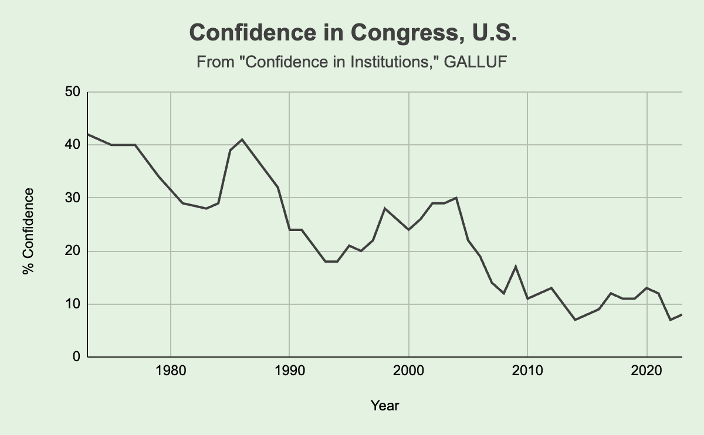
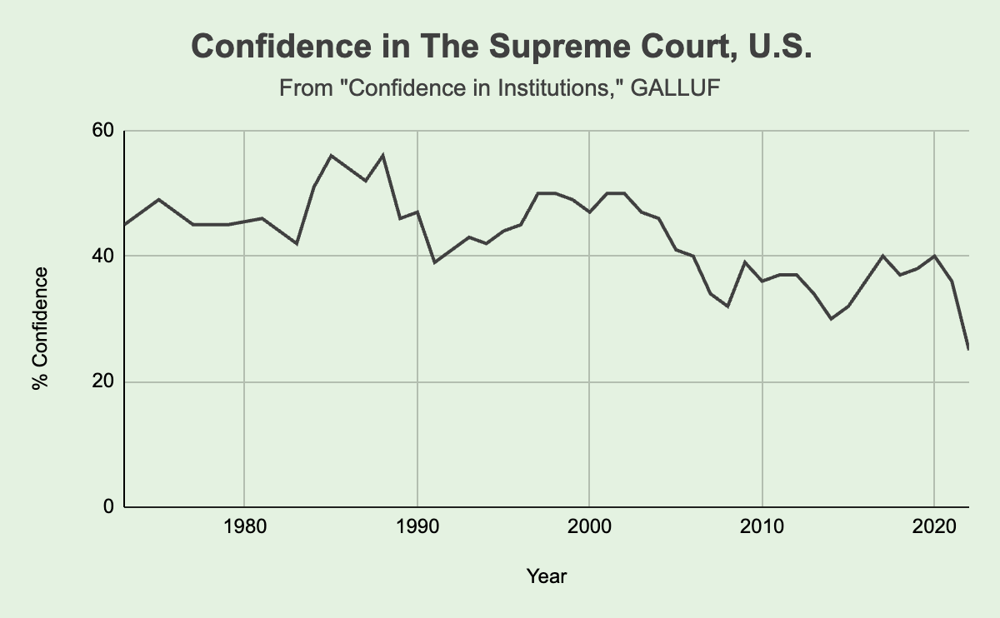
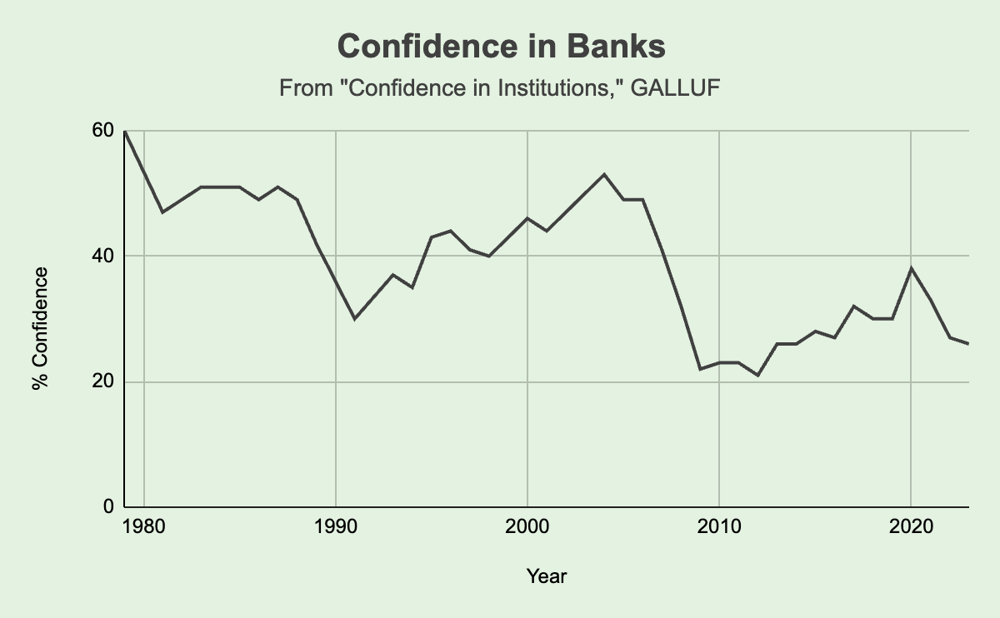
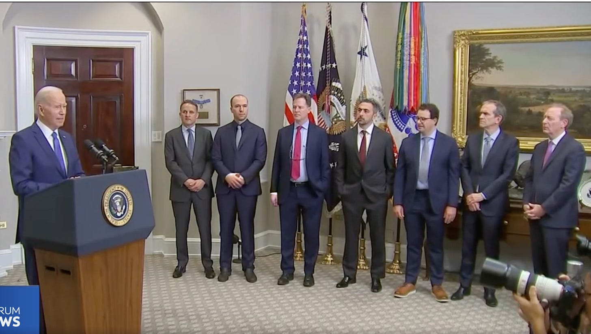
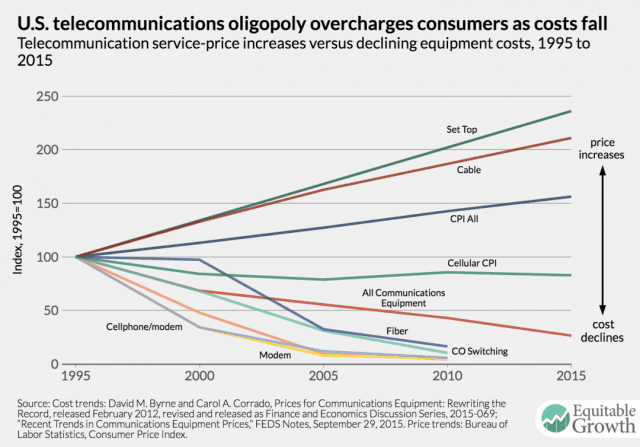
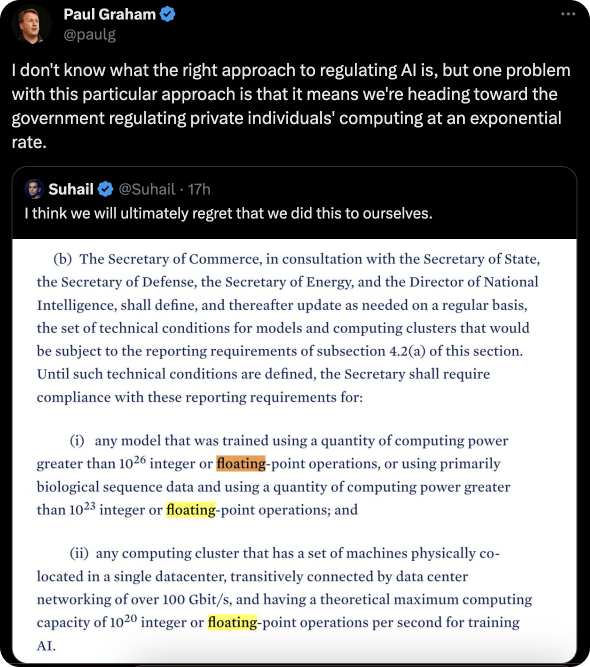
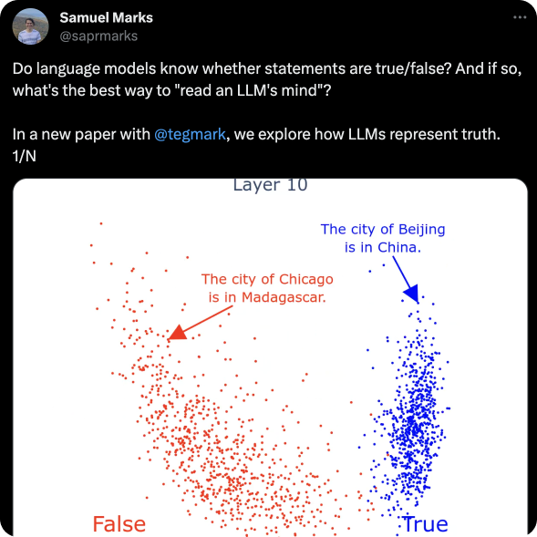
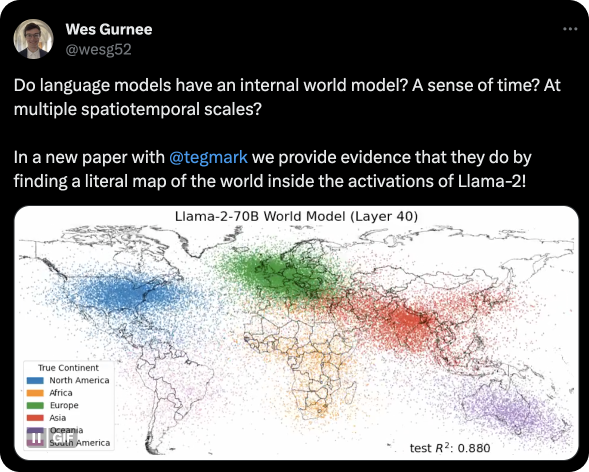
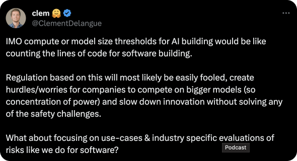

Countering "The Coming Wave" by Mustafa Suleyman: The Case for Open Source AI
It is we who will be affected, hence it is we who are in-charge
I’ve read the book “The Coming Wave” by Mustafa Suleyman, the Co-Founder of DeepMind and Inflection AI, a legendary entrepreneur in the space of AI. Unfortunately, though, his view on the upcoming “wave” of technological revolution is devastating for the people and the values of modern society. His arguments of how we must handle the dangerous aspects of these new technologies are lacking and dangerous if they will be followed. Democracy, Self-Sovereignty, and everything we stand for as a modern society are at stake here.
In short, Mustafa claims that the upcoming technologies of the next few years (mainly in the space of Artificial Intelligence and Biotech) will be so fundamentally disrupting that we must change the way we allow and conduct innovation, scientific discoveries, and knowledge sharing - all in order to contain the danger these technologies will bring. The book is an ongoing case for why we should do that, how this wave is different from previous technological changes, and eventually finish with what we must do to be safe and for civilization to continue.
In this essay, I hope to debunk the holes in his ideas and show why they’re problematic; we will talk about:
Why nation-states are not our strong pillars
How the well-funded companies use regulation as a moat
The upcoming unipolar AGI scenario
Unwanted side-effects of regulation on individuals
The issue with AI-safety research on out-of-reach black box
Why closed-source security is not superior to open-source
The biased progress in AI alignment
Then, I will suggest an alternative approach for moving forward in these changing times. Let’s get started!
Issues with Mustafa’s Arguments
Wrong Starting Point: Why Nation-States Are Not Our Strong Pillars
Before we dive into the more technical holes of Mustafa’s ideas, I want to briefly refer to the most fundamental building block of his solution argument: the nation-state.
Mustafa uses the nation-state as the de facto tool for world cooperation and world governance to fight and save us from AI that goes rogue from civilization’s best interests.
However, I disagree with the underlying assumptions here that nation-states have the public’s best interests in mind. In today’s Western world, democracies are more polarized than ever. Trust in institutions and leaders is at a low point, while corruption is at a high point worldwide.



And the list goes on and on. But unlike Mustafa’s claims that “as an equal partner in the creation of the coming wave, governments stand a better chance of steering it towards the overall public interest,” - it’s enough to consume the media in the last few years to realize how corrupted the world is. From Biden’s son, Hunter, and his legal troubles to the broader phenomena with the Twitter Files - governments and public officials are not aligned with the public’s best interest as we wished they were.

Suppose this technological revolution is as big as Mustafa suggests- a breaking point from which there is no going back, a powerful tool that puts everything we know in danger. In that case, governments are not the ones to handle it, at least not in their current structure; they just don’t have the moral mandate to make AI-related crucial decisions on our behalf. Accumulating such power in the hands of the few won’t end well.
If the stakes are as high as Mustafa claims them to be - then the nation-state mustn’t be making these decisions for our entire civilization.
How Well-Funded Companies Use Regulation as a Moat
Throughout the book, Mustafa tells us stories about how previous regulations worked amazingly. From the nonproliferation of Nuclear Weapons, the FAA (Federal Aviation Administration), the FDA (Food and Drug Administration), and a few more examples. He uses these examples to make his later suggestion land better: a license-based regulation for AI companies:
“Today, anyone can build AI. Anyone can set up a lab. We should instead move to a more licensed environment. […] so you shouldn’t simply be able to release a state-of-the-art AI,” Mustafa Suleyman
Now, there are two terms here I want you to understand:
“moat,” which, in the context of businesses and companies, means a company’s ability to maintain competitive advantages over its competitors to protect its long-term profits and market share from competing firms.
“regulatory capture” - a situation in which a government agency that was meant to regulate an industry becomes too influenced by that industry, undermining its ability to protect the public interest effectively and ending up serving the interests of the industry itself (and the big players in that industry in particular).
Regulatory capture is already being used as a moat by many industries. Companies are actively trying to leverage and manipulate regulations and policymakers. Special interests are shaping policy for their own benefit, stifling competition, raising prices, and inhibiting innovation.
The following talk by Bill Gurley is a great explanation of how companies throughout the years have done exactly that. Bill explains this better than I ever can, so I highly recommend you watch it. But, if we fetch just one example from the video, it will be The Telecommunications Act of 1996. This was a US legislation that attempted to bring more competition to the telephone market for both local and long-distance services. However, the result was that over 20 states essentially outlawed cities from providing free public WiFi due to telecom giants like Verizon and Comcast, who lobbied state legislatures to pass bills banning municipal broadband, protecting their own commercial interests rather than serving citizens.

With that knowledge in mind, I’d like to note how well-connected Mustafa is in both the UK and the US governments. Just recently, he met with US President Joe Biden to discuss the dangers of the AI revolution; he has connections among the leading AI organizations like DeepMind by Google (which he founded and was acquired by Google) and other influential individuals (like Yuval Noah Harari, Eric Schmidt, and others).
I am not after attacking Mustafa specifically, but whoever thinks there are no special interests involved in these discussions is delusional and naive.
Whoever thinks there are no special interests involved in these discussions is delusional and naive.
The Upcoming Unipolar AGI (Artificial General Intelligence) Scenario
Another issue with regulation is its outcome. Whether you agree that an AGI (Artificial General Intelligence) is on the horizon or not, what matters for the sake of this argument is that the people who are leading the big AI companies do believe (or claim to believe) it is coming. From the book’s author, Mustafa, to OpenAI’s Sam Altman, Elon Musk, and others.
Now, there is a common discussion among AI researchers about what happens when we achieve AGI - is it better to have one AGI (known as the Unipolar AGI scenario) - so we can more centrally control it, or are we better off having a few (Multipolar AGI scenario) - so that the power will be balanced and distributed?
Suppose you are like me, believing in democracy and the idea of Separation of Power - then, obviously, the multipolar scenario sounds better. But, there are varied arguments for either approach, with some philosophical research and discussions being done in that space, with discussions on Twitter, too. Overall, though, the leaders of the AI community believe that the multipolar scenario is a favorable outcome for humanity. From OpenAI’s CEO Sam Altam, who said that “multiple AGIs in the world I think is better than one,” to Elon Musk, who said in an interview that “you don’t want to have a unipolar world where one company dominates in AI.”
So we have people who are saying the following three arguments simultaneously:
AGI is coming
Having one is bad; having a few separate ones will be better
Let’s regulate our industry and create an entrance barrier
The issue is that we won’t get a multipolar AGI scenario with a well-coordinated, unified world government that regulates and places high entrance barriers for AI research and development. They cannot have it both ways. They cannot morally claim that we must have a multipolar AGI scenario while also restricting actors from participating in this space. It just doesn’t work. And as Yann LeCun, Chief AI Scientist at Meta (Facebook), says, “[It will] *inevitably* result in what you and I would identify as a catastrophe: a small number of companies will control AI.”
“AGI is coming” + believing Multipolar AGI is better + Want regulation
===
A broken line of thought.
Unwanted Side-effects of Regulation for Individuals
Last point regarding the regulation issue: President Biden's recent Executive Order on Safe, Secure, and Trustworthy Artificial Intelligence shows that they plan to enforce AI safety by limiting the amount of compute power (hardware, processors, computers, essentially) you can own and the amount of operations you can perform on it ( FLOPS - floating-point operations per second).
Currently, the suggested limit is very high, targeting large companies and their enormous datacenters. However, today’s compute power of the best supercomputers is tomorrow’s consumers’ level of compute power. The compute power that was exclusively delivered by supercomputers will be accessible to startups in garages and individuals in the next few years - as Moore's law has consistently shown us over the last 50 years.

Rolling back regulation after it passed is not an easy task, and it sets a precedent for further regulations and tightening of the restrictions (which, in this case, basically means limiting math).
Additionally, regulations can be used maliciously by the government itself - like what happened with the Patriot Act in the US. In the name of fighting terrorism after 9/11, the Patriot Act allowed the government and law enforcement to perform mass surveillance on citizens - which they actually did. The AI act might enable governments to misuse their power in a similar way, and much worse: limiting individuals’ privacy (to track who owns what hardware), autonomy, and liberty (what you do with your computing power).
Regulations can be used maliciously by the government. Let’s be careful with what more power we provide them with.
Why Closed-Source Security is Not Superior to Open-Source
To show how previous technologies were maliciously used to cause harm, Mustafa gave an example from the realm of cybersecurity, a space I’m happy to have some knowledge of!
He talked about how cyber attacks (in particular, WannaCry, a ransomware attack that disabled critical infra in the UK a few years ago) - showed us that “core institutions of modern life are vulnerable” (I’m quoting Mustafa here, yeah?) as “such attacks demonstrate that there are those who would use cutting-edge technologies to degrade and disable key state functions” and that “lone individual and a private company (Microsoft),” had to patch it themselves.
Essentially, he is referring to the fact that the attackers used a loophole (known in the industry as a “vulnerability”) in Microsoft’s software Windows (the operating system) to block access to the computers of the UK NHS (National Health Service). He said: “If everyone has access to more capability, that clearly also includes those who wish to cause harm […] Democratizing access means democratizing risk.” - so far so good, isn’t it? Well, what he forgot to note is that in the case of Operating Systems, Linux, an open-source alternative to Microsoft’s Windows, is much more secure and often patches way quicker than Windows, and developing such attacks for Linux is much more complex.
The reason why Linux is more secure is because everyone has access to the underlying code. Therefore, everyone can find and fix security risks (which are then all publicly available). Because of the nature of that software paradigm, there are plenty more people in the open-source community who are working on finding and fixing these bugs than you have working in Microsoft (across all of the company!). They often do it for free (for the sake of the community, humanity, or just curiosity) - and also through paid bounties (plenty of companies have the incentives to find and fix open-source vulnerabilities in Linux, as it is used in so many places. In fact, it is usually one of the most well-paying bounties, as it is also one of the toughest to find issues in due to its hardcore security)
The argument is simple: creating models openly leads to a more resilient solution that is less prone to harm than closed development, AI safety concerns, AI tools, etc. - are not an exception to that rule.
(Additionally, similar to what we previously talked about regarding special interests when it comes to big corporations and the government - it also works the other way around. Microsoft is working so closely with the US government—one of its largest enterprise customers (if not the largest). It wouldn’t be a surprise if the US gov approached Microsoft (or even agreed on a formal procedure) to “not” patch publicly undiscovered security risks for some time (these are known as 0-day) so the government can use it in the name of “national security.” Microsoft has great incentives to follow and not to fix some issues - working against the public best interest, as the US government is the biggest buyer of zero-day vulnerabilities, report claims.)
Open-source tends to be more secure - NOT the other way around. Thanks to the good people of the earth!
The Issue with AI-Safety Research on Out-of-Reach Black Box
Another point that Mustafa is making is the need for AI safety research. He suggests that the government should make companies dedicate 20% of their R&D budget to safety research.
I am not ignorant of the potential great risks that AI can pose, from the social instability associated with mass labor automation to the age of misinformation, the lack of establishing truth online, and even the doomsday scenarios of paperclip maximizers. They all have a place in the discussions.
To contain these risks, or at least roll them out from feasibility - we need to understand these models as best as possible. We need to understand how they work, what neural structure is created in them during training, what biases and pitfalls are fused to their weights, etc.
Therefore - I agree with Mustafa that there is room for AI safety research and a place for the government to incentivize that.
However, I can’t see how we can have effective AI safety research without access to the underlying systems. Mustafa’s call for safety is within the organization, but the best safety research I’ve seen so far came from the community, investigating an Open-source Large Language Model called Llama-2!


There is a reason open science and knowledge sharing was and is so fundamental to the flourishing of humankind - it’s a way to distribute difficult and complex tasks most efficiently. No matter how much money you pour into AI safety research (20% like Mustafa suggested and OpenAI committed to) - you cannot get better results than the entire AI community worldwide. You just can’t.
Potential Risk → requires us to understand models → which requires research → which requires access to models.
The Biased Progress in Closed-Source AI Alignment
Lastly, I want to add context to one of the great achievements in AI alignment that Mustafa mentioned in the book - the “RLHF” technique (Reinforcement Learning from Human Feedback). This technique trains AI models by having humans give feedback on the model’s outputs, which the model then uses to improve.
However useful it is (it was one of the main improvements in creating ChatGPT), the humans providing feedback are inherently biased. Right now, they are likely Western English speakers - in fact, we can already see that ChatGPT leans liberal. Diverse global perspectives are not incorporated into this process. For actual human alignment, RLHF needs more representative human feedback, which requires giving access to the dataset and the training process to the entire world.
So, what am I suggesting?
It is much easier to debunk someone’s ideas than to come up with your own. And I must say I am not entirely opposed to Mustafa’s ideas and arguments, as already mentioned. Some of them are relevant, and I think he generally has good intentions.
But, his proposed solutions of increased government regulation and closed-source development are fundamentally flawed. As discussed, our current governmental institutions are plagued by corruption, partisanship, and regulatory capture by special interests. Handing over even more power to regulate technology is unlikely to serve the public good. Additionally, closed-source development limits transparency stifles innovation, and consolidates control in the hands of a few powerful companies. Mustafa’s arguments for AI safety research and multipolar AGI also contradict his calls for regulation and closed systems.
Rather, we should look to decentralize control and democratize access to powerful technologies through open-source development, decentralized governance models, and a diverse, multipolar landscape of perspectives and values.
Openness: The world is undoubtedly a complex place. Trying to capture and steer it with policymakers and high-profile innovators alone is doomed to fail. It is the same as the free markets, which work because they are open and free, whereas central planning failed, as it is too complex. AI risk containment is similar; it can only work in the open, where humanity as a whole works on that together.
Openness, therefore, stands as a cornerstone of our strategy. I encourage any initiative that supports, cultivates, and encourages openness in the space of AI research, safety, and alignment - government or otherwise. Governments can put more pressure on companies to open source their datasets, architectures, and weights so that we, the community, can investigate them, find the different pitfalls, stretch their limitations, patch the issues, develop safe mechanisms, and build tools that help us monitor anomalies in the models; I encourage the government to do that in the open, too. As a community, we need to work in the open, share our findings and insights, help each other develop tools and ways of evaluating dangerous behavior, and monitor progress.Open Safety Research: As mentioned previously in the essay, the best way to face the risks is to understand these AI models as much as possible. We need to know how they work internally, what different neural structures are responsible for what capability, etc. As a community, the industry should put more value and attention into AI safety and achievements. OpenAI’s initiative to create bounties for bugs is a good start, but we should do more: bounties, rewards, grants, etc. We should fund and encourage open investigation of AI models. This is something that the government can and should incentivize, too.
Tools: When it comes to the more urgent issues with AI: misinformation, manipulation, deep fake, etc. - I think the only option we have to fight it is *more technology*. To have a society where “deep fake video” is not an issue, we need to create tools that help individuals detect them rather than trying to stop people from creating them. This can be achieved, again, by government grants and such - but I also believe it will naturally be created even without govs because the need will be there, and the free markets will fund it! (Unless, of course, we will be regulated from creating the solution to the problem)
Red Teams: Here, I am very much aligned with Mustafa. I think government-funded red teams will be useful (a red team is a group that pretends to be an “enemy” / a malicious actor and tries to “break” the AI model to find its flaws). However, their findings must be available online for everyone to learn from.
Some Place for Regulation: Another interesting point I saw recently on Twitter was by Clem, HugginFace’s CEO, where he suggested that governments should regulate based on use cases and not based on the size of the model and the amount of compute needed (as currently suggested by the US):

This can allow the development of good AI that pushes humanity forward while also avoiding potential bad use cases. That being said, transparency and open discussion on what these industries are are important.
And Lastly - A few Words About the e/acc & Techno-Optimism Counter-Movement
There is a counter-movement to the established “calling for regulation” AI leaders called e/acc (Effective Accelerationism) and/or Techno-Optimism. In short, they’re saying that we must keep pushing (and accelerate) scientific research and technological innovation forward as much as possible and that we should not hold it by creating a high-regulated environment in order to keep civilization flourishing. As you can tell by my essay, this is also my view (more or less).
However, I disagree with something about this movement, and I felt like I should share my perspective here, hoping some of these people will read it.
While claiming to advocate for a distributed power and acceleration (as they recently have, calling for an alliance with the crypto community), which is indeed a crucial aspect for the positive future of humanity and democracy, they are also very much following the problematic aspect of the existing establishment by having a leader-first paradigm. Founders-centric movement like that tends to concentrate powers, hierarchy, and longer-term also unproductive bureaucracy. And it is funny because Marc Andreessen, the author of the Techno-Optimism manifesto, is saying clearly that “Our enemy is bureaucracy,” - yet he glorifies the “Patron Saints of Techno-Optimism.” - the irony is a bit sad, as status games, hierarchy (saints), etc., are what create an unproductive bureaucracy!
So, for the e/accs people who might read this: While pushing for the advancement of civilization, beware of creating the same thing you’re trying to replace, if not worse. The leadership and the powers that drive the movement forward should also be decentralized.
Thank you for reading. If you liked my content, don’t hesitate to reach out. I’d love to talk with more people and discuss everything that was mentioned here!
Twitter: https://twitter.com/adamcohenhillel
LinkedIn: https://www.linkedin.com/in/adamcohenhillel
Email: adamcohenhillel@gmail.com
Adam.